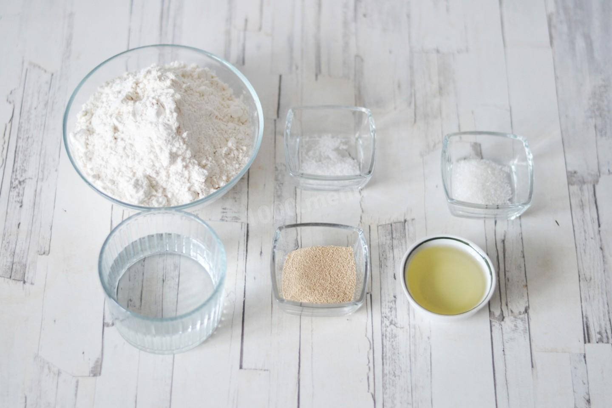

Вряд ли найдется человек, который не любит пиццу. Эти кусочки мягкого теста с разнообразной сочной начинкой покорили весь мир. Пепперони занимает лидирующие позиции среди остальных видов не зря: у пиццы замечательный солено-острый вкус.
Время приготовления:
1 час 40 минут
Ингредиенты
ТЕСТО:
- Пшеничная мука
- 250 г
- Вода
- 120 мл
- Сухие дрожжи
- 10 г
- Растительное масло
- 1 стол. ложка
- Сахар
- 1 щепотка
- Соль
- 1 щепотка
СОУС:
- Помидоры
- 1 г
- Оливковое масло
- 1 стол. ложка
- Кетчуп
- 1 стол. ложка
- Томатная паста
- 1 чайн. ложка
- Чеснок
- 2 зубчика
- Прованские травы (розмарин, базилик, тимьян)
- 5 г
- Паприка
- 0.25 чайн. ложки
- Перец чили
- 1 щепотка
- Соль
- по вкусу
НАЧИНКА:
- Моцарелла (для пиццы)
- 120 г
- Сырокопченая колбаса (пепперони)
- 100 г
Приготовление
-
Как сделать пиццу Пепперони в домашних условиях? Для начала подготовьте ингредиенты для теста.

-
-
-
-
Так как степень солености, сладости, горечи, остроты, кислоты, жгучести у каждого индивидуальная, всегда добавляйте специи, пряности и приправы, ориентируясь на свой вкус! Если какую-то из приправ вы кладете впервые, то учтите, что есть специи, которые особенно важно не переложить (например, перец чили).
-
Учитывайте, что духовки у всех разные. Температура и время приготовления могут отличаться от указанных в рецепте. Чтобы любое запеченное блюдо получилось успешным, воспользуйтесь полезной информацией об особенностях духовок!